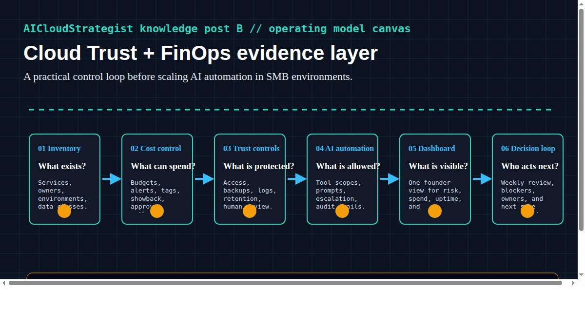

AICloudStrategist daily knowledge post B • Cloud Trust, FinOps, and practical AI ops controls
Cloud Trust + FinOps: The Evidence Layer SMBs Need Before AI Automation Scales
Cloud dashboards show infrastructure signals. Buyers and founders also need evidence: ownership, cost guardrails, data boundaries, incident paths, and automation controls.

Public knowledge note
Cloud dashboards show infrastructure signals. Buyers and founders also need evidence: ownership, cost guardrails, data boundaries, incident paths, and automation controls.
- Inventory — What exists?: Services, owners, environments, data classes.
- Cost control — What can spend?: Budgets, alerts, tags, showback, approval paths.
- Trust controls — What is protected?: Access, backups, logs, retention, human review.
- AI automation — What is allowed?: Tool scopes, prompts, escalation, audit trails.
- Dashboard — What is visible?: One founder view for risk, spend, uptime, and exceptions.
- Decision loop — Who acts next?: Weekly review, blockers, owners, and next safe experiment.
Practical takeaway: Use this as an internal benchmark canvas before promising automation outcomes.
Proof boundary
Internal/demo framework. No certifications, rankings, savings claims, or compliance/legal guarantees claimed.
Need this operating layer in your business?
Request a free growth review or contact AICloudStrategist. We avoid fake client proof, unsupported compliance claims and guaranteed outcome claims.